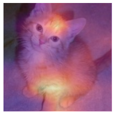
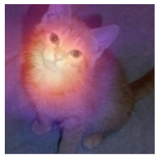
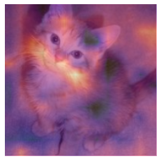

Notes on fastai Book Ch. 18
ai
fastai
notes
pytorch
Chapter 18 covers interpreting convolutional neural networks using class-activation maps.
#hide
# !pip install -Uqq fastbook
import fastbook
fastbook.setup_book()#hide
from fastbook import *import inspect
def print_source(obj):
for line in inspect.getsource(obj).split("\n"):
print(line)CNN Interpretation with CAM
CAM and Hooks
Class Activation Map (CAM)
- Learning Deep Features for Discriminative Localization
- uses the output of the last convolutional layer together with the predictions to generate a heatmap visualization of why the model made its decision
- at each position of our final convolutional layer, we have as many filters as in the last linear layer
- we can compute the dot product of the activations with the final weights to get the score of the feature that was used to make a decision for each location in our feature map
- need a way to get access to the activations inside the model while it is training
- can use PyTorch hooks
PyTorch Hooks
- PyTorch’s equivalent of fastai’s callbacks
- allow you to inject code into the forward and backward calculations themselves
- can attach a hook to any layer of the model, and it will be executed when we compute the outputs (forward hook) or during backpropogation (backward hook)
- forward hook:
- a function that takes a module, its input, and its output
- can perform any behavior you want
HookCallback fastai.callback.hook.HookCallbackprint_source(HookCallback) @funcs_kwargs
class HookCallback(Callback):
"`Callback` that can be used to register hooks on `modules`"
_methods = ["hook"]
hook = noops
def __init__(self, modules=None, every=None, remove_end=True, is_forward=True, detach=True, cpu=True, include_paramless=False , **kwargs):
store_attr('modules,every,remove_end,is_forward,detach,cpu, include_paramless')
assert not kwargs
def before_fit(self):
"Register the `Hooks` on `self.modules`."
if self.modules is None: self.modules = [m for m in flatten_model(self.model) if self.include_paramless or has_params(m)]
if self.every is None: self._register()
def before_batch(self):
if self.every is None: return
if self.training and self.train_iter%self.every==0: self._register()
def after_batch(self):
if self.every is None: return
if self.training and self.train_iter%self.every==0: self._remove()
def after_fit(self):
"Remove the `Hooks`."
if self.remove_end: self._remove()
def _register(self): self.hooks = Hooks(self.modules, self.hook, self.is_forward, self.detach, self.cpu)
def _remove(self):
if getattr(self, 'hooks', None): self.hooks.remove()
def __del__(self): self._remove()
path = untar_data(URLs.PETS)/'images'
path Path('/home/innom-dt/.fastai/data/oxford-iiit-pet/images')def is_cat(x): return x[0].isupper()
dls = ImageDataLoaders.from_name_func(
path, get_image_files(path), valid_pct=0.2, seed=21,
label_func=is_cat, item_tfms=Resize(224))
# Train a cat classifier with the default settings
learn = cnn_learner(dls, resnet34, metrics=error_rate)
learn.fine_tune(1)| epoch | train_loss | valid_loss | error_rate | time |
|---|---|---|---|---|
| 0 | 0.127009 | 0.042651 | 0.011502 | 00:15 |
| epoch | train_loss | valid_loss | error_rate | time |
|---|---|---|---|---|
| 0 | 0.045776 | 0.023368 | 0.007442 | 00:19 |
print_source(image_cat) def image_cat (): return BytesIO(pkgutil.get_data('fastbook', 'images/cat.jpg'))# Load an image of a cat
img = PILImage.create(image_cat())
# Get a batch of data from the test set
x, = first(dls.test_dl([img]))# Define a hook that stores a copy of the output
class Hook():
def hook_func(self, m, i, o): self.stored = o.detach().clone()# Instantiate a hook
hook_output = Hook()
# Attach the hook to the last layer in the model
hook = learn.model[0].register_forward_hook(hook_output.hook_func)# Perform inference on the test batch
with torch.no_grad(): output = learn.model.eval()(x)# Get the copy of the model activations from the hook
act = hook_output.stored[0]
act.shape torch.Size([512, 7, 7])# Check the model predictions
F.softmax(output, dim=-1) TensorBase([[4.0876e-09, 1.0000e+00]], device='cuda:0')Note: The model is confident the image contains a cat.
dls.vocab [False, True]x.shape torch.Size([1, 3, 224, 224])learn.model[1] Sequential(
(0): AdaptiveConcatPool2d(
(ap): AdaptiveAvgPool2d(output_size=1)
(mp): AdaptiveMaxPool2d(output_size=1)
)
(1): Flatten(full=False)
(2): BatchNorm1d(1024, eps=1e-05, momentum=0.1, affine=True, track_running_stats=True)
(3): Dropout(p=0.25, inplace=False)
(4): Linear(in_features=1024, out_features=512, bias=False)
(5): ReLU(inplace=True)
(6): BatchNorm1d(512, eps=1e-05, momentum=0.1, affine=True, track_running_stats=True)
(7): Dropout(p=0.5, inplace=False)
(8): Linear(in_features=512, out_features=2, bias=False)
)learn.model[1][-1] Linear(in_features=512, out_features=2, bias=False)# Calculate the dot product the weight matrix for the last layer with the activations
cam_map = torch.einsum('ck,kij->cij', learn.model[1][-1].weight, act)
cam_map.shape torch.Size([2, 7, 7])Note: The result of the dot product is a \(7x7\) feature map that shows where the activations were higher and lower.
# Get the first image from the test batch
x_dec = TensorImage(dls.train.decode((x,))[0][0])
_,ax = plt.subplots()
x_dec.show(ctx=ax)
# Overlay the feature map for the cat class on top of the cat image
ax.imshow(cam_map[1].detach().cpu(), alpha=0.6, extent=(0,224,224,0),
interpolation='bilinear', cmap='magma');
Note: The bright yellow spots correspond to high activations. * The head and front paw seem to have had the most influence on the model’s prediction.
# Remove the hook to avoid memory leaks
hook.remove()print_source(hook.remove) def remove(self) -> None:
hooks_dict = self.hooks_dict_ref()
if hooks_dict is not None and self.id in hooks_dict:
del hooks_dict[self.id]# Update the custom hook to be a context manager
class Hook():
def __init__(self, m):
self.hook = m.register_forward_hook(self.hook_func)
def hook_func(self, m, i, o): self.stored = o.detach().clone()
# Automatically register the hook when entering it
def __enter__(self, *args): return self
# Automatically remove the hook when exiting it
def __exit__(self, *args): self.hook.remove()# Pass the model to the `__enter__()` method for the Hook
with Hook(learn.model[0]) as hook:
with torch.no_grad(): output = learn.model.eval()(x.cuda())
act = hook.storedNote: This method only works for the last layer.
Gradient CAM
- Grad-CAM: Why did you say that?
- uses the final activation for the desired class
- can use Grad-CAM on any layer
- recall the gradients of the output of the last layers with respect to the input of that layer are equal to the layer weights
# Define a hook that stores a copy of the gradients calculated by PyTorch during the backward pass
class HookBwd():
def __init__(self, m):
self.hook = m.register_backward_hook(self.hook_func)
def hook_func(self, m, gi, go): self.stored = go[0].detach().clone()
def __enter__(self, *args): return self
def __exit__(self, *args): self.hook.remove()# The class index for the cat class
cls = 1
with HookBwd(learn.model[0]) as hookg:
with Hook(learn.model[0]) as hook:
output = learn.model.eval()(x.cuda())
act = hook.stored
# Get the gradients for the cat class for the first image in the test set
output[0,cls].backward()
grad = hookg.stored# Calculate the average of the gradients across the feature map
w = grad[0].mean(dim=[1,2], keepdim=True)
cam_map = (w * act[0]).sum(0)_,ax = plt.subplots()
x_dec.show(ctx=ax)
ax.imshow(cam_map.detach().cpu(), alpha=0.6, extent=(0,224,224,0),
interpolation='bilinear', cmap='magma');
# Get the gradients for the output of the second to last ResNet group
with HookBwd(learn.model[0][-2]) as hookg:
with Hook(learn.model[0][-2]) as hook:
output = learn.model.eval()(x.cuda())
act = hook.stored
output[0,cls].backward()
grad = hookg.storedw = grad[0].mean(dim=[1,2], keepdim=True)
cam_map = (w * act[0]).sum(0)_,ax = plt.subplots()
x_dec.show(ctx=ax)
ax.imshow(cam_map.detach().cpu(), alpha=0.6, extent=(0,224,224,0),
interpolation='bilinear', cmap='magma');
print_source(ActivationStats) @delegates()
class ActivationStats(HookCallback):
"Callback that record the mean and std of activations."
order=-20
def __init__(self, with_hist=False, **kwargs):
super().__init__(**kwargs)
self.with_hist = with_hist
def before_fit(self):
"Initialize stats."
super().before_fit()
self.stats = L()
def hook(self, m, i, o):
if isinstance(o, tuple): return self.hook_multi_ouput(o)
o = o.float()
res = {'mean': o.mean().item(), 'std': o.std().item(),
'near_zero': (o<=0.05).long().sum().item()/o.numel()}
if self.with_hist: res['hist'] = o.histc(40,0,10)
return res
def hook_multi_ouput(self,o_tuple):
"For outputs of RNN which are [nested] tuples of tensors"
res = []
for o in self._flatten_tuple(o_tuple):
if not(isinstance(o, Tensor)): continue
res.append(self.hook(None, None, o))
return res
def _flatten_tuple(self, o_tuple):
"Recursively flatten a [nested] tuple"
res = []
for it in o_tuple:
if isinstance(it, tuple): res += self._flatten_tuple(it)
else: res += [it]
return tuple(res)
def after_batch(self):
"Take the stored results and puts it in `self.stats`"
if self.training and (self.every is None or self.train_iter%self.every == 0):
self.stats.append(self.hooks.stored)
super().after_batch()
def layer_stats(self, idx):
lstats = self.stats.itemgot(idx)
return L(lstats.itemgot(o) for o in ('mean','std','near_zero'))
def hist(self, idx):
res = self.stats.itemgot(idx).itemgot('hist')
return torch.stack(tuple(res)).t().float().log1p()
def color_dim(self, idx, figsize=(10,5), ax=None):
"The 'colorful dimension' plot"
res = self.hist(idx)
if ax is None: ax = subplots(figsize=figsize)[1][0]
ax.imshow(res, origin='lower')
ax.axis('off')
def plot_layer_stats(self, idx):
_,axs = subplots(1, 3, figsize=(12,3))
for o,ax,title in zip(self.layer_stats(idx),axs,('mean','std','% near zero')):
ax.plot(o)
ax.set_title(title)References
Previous: Notes on fastai Book Ch. 17